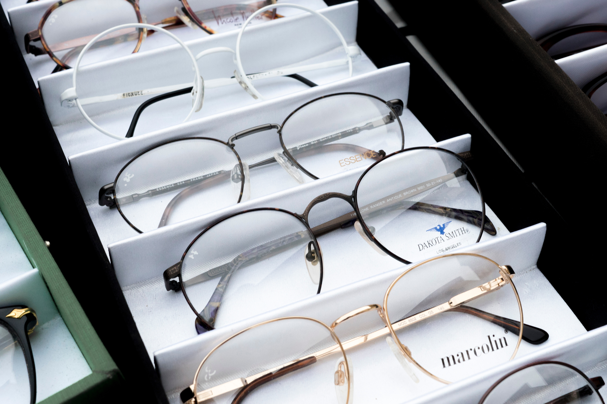

Boston Tech Optics
Home
Services
Contact
Home
Services
Contact
Our Services
Eye and Vision Exams
Eye exams should be scheduled annually, with the exception of individuals with vision-related problems who may need more frequent checkups. During your exam, we'll discuss any problems you may be currently experiencing with your eyes, if any, along with your symptoms.
Frame Selection
Your eyeglasses let the world know who you are! We make it fun to see all the options in eyeglasses and sunglasses. At Boston Tech Optics, we love sharing our expertise, and we especially love that moment when you find exactly the right look.

Pre-Op and Post-Op LASIK Evaluations
Visit Boston Tech Optics to discuss the benefits and risks of LASIK surgery. With LASIK surgery, a specialized cutting laser is used to change the shape of the clear tissues that sit in front of your cornea. LASIK surgery can eliminate the need to wear glasses.